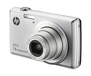

LO QUE EL MÓVIL SE
LLEVÓ
Desde su aparición, el teléfono móvil no se ha limitado a su función básica,
hacer llamadas de teléfono. Poco a poco ha ido incorporando más y más funciones,
sustituyendo a otros dispositivos.
Aunque antes la gente se sabía de memoria los teléfonos de su familia más próxima,
al lado de cualquier teléfono siempre podía encontrarse una agenda de teléfonos,
con los teléfonos menos utilizados. Y un poco más allá podía encontrarse la guía
de teléfonos de la ciudad. Los buscadores de Internet han acabado con las guías de
teléfonos y las agendas incorporadas en los móviles han acabado con las agendas en
papel, hasta el punto de que mucha gente no se sabe ya ningún número de teléfono,
¡a veces ni siquiera el propio!.
 Los calendarios de bolsillo
Los calendarios de bolsillo
Hace pocos años, al llegar el fin de año, peluquerías, veterinarios y otros comercios
regalaban a sus clientes un pequeño calendario del tamaño de una tarjeta que estos guardaban
en la cartera para consultar a lo largo del año.
El reloj de pulsera
Cada vez menos gente lleva un reloj en la muñeca. A muchos les sirve de excusa para sacar
el móvil continuamente y, de paso, consultar sus redes sociales
😉
Las cámaras de fotos
La fotografía analógica fue completamente sustituida por la fotografía digital a principios
del siglo XXI. Lo que no se esperaban los fabricantes de cámaras es que los teléfonos móviles
sustituyeran completamente a las cámaras más sencillas, dejándoles un mercado de cámaras profesionales
cada vez más reducido.
Los reproductores de música
El reproductor de cassettes portátil Walkman de Sony revolucionó en los años 80 la escucha de música.
Fue sustituido por los reproductores de MP3 a principios del siglo XXI, entre los que cabe descatar
el iPod de Apple, el producto que inició el ascenso de Apple a la posición de liderazgo de la que goza
actualmente. Pero desde 2010, estos reproductores están desapareciendo en favor del omnipresente móvil.
Y mucho más
La lista de víctimas del móvil es interminable: calculadoras, linternas, despertadores, consolas de
juego portátiles, mensáfonos, mapas y guías de viaje, diccionarios, etc. El teléfono móvil amenaza
ya a sus dos padres, el teléfono fijo y el ordenador personal. Parafraseando a Marc Andressen, podríamos
decir que "el teléfono móvil está devorando el mundo".
Autor: Bartolomé Sintes Marco
Última modificación de esta página: 22 de junio de 2021.